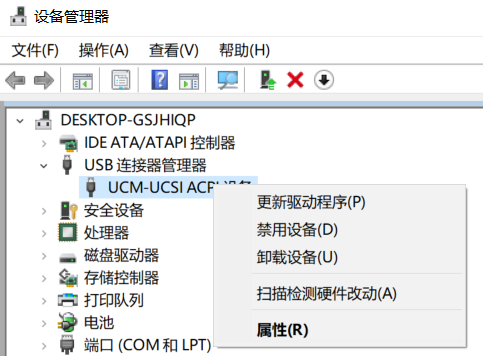

我的电脑有三个USB插口，左边一个，右边两个
有一天，右边靠近屏幕的那个插口无法识别到我的无线鼠标了，我当时没太在意，毕竟还有两个可以用，然后大概是这学期开学的时候，右边的另一个插口也无法识别到我的鼠标了，我又测试了其他输入输入或者输出设备，比如打印机等等，发现也不行了。到了去年的12月上旬，我发现仅存的左边的USB口也沦陷了。
目前三个口都是无法正常地连接外部设备和笔记本电脑，具体来说就是比如无线鼠标的接收器插上口鼠标移动没反应(鼠标在其他电脑上可以用，所以鼠标是正常的)，U盘、手机这些带有存储功能的设备插上后在"此电脑"界面也是有我原来的C,D,E磁盘，不过，手机和平板插上后都可以正常充电
我自己也试过网上的一些办法，首先是在设备管理器中尝试对和USB相关的设备进行操作，即USB连接器管理器和通用串行总线控制器，
我遍历了右键点开这些设备之后可以进行的所有操作，即更新，禁用再启用，卸载再重启电脑(重启电脑后会重新将设备挂载)，以及扫描，均没有解决问题。 
我参考了https://jingyan.baidu.com/article/f79b7cb33ef2e19145023e4b.html 提到的方法，查看了注册表，同时下载驱动人生进行驱动的扫描和修复，并且查看了注册表，Start项的值是3，和参考里面所说的正常情况一致。
我也没有其他办法了，也许是USB接口本身的问题了，可能要换个接口了。
于是我就把电脑送去修，果然是硬件的问题，修电脑的人说可能是南桥烧坏了。给我重新换了一个主板，这才解决了问题。
笔记本又可以正常工作了，但南桥为什么会烧毁呢？或者说之前我的USB接口为什么就无法正常工作了呢？这引起了我的好奇心。
想搞明白这个问题，得先搞明白一些名词。
南桥
https://en.wikipedia.org/wiki/Southbridge_(computing)
在英特尔的芯片组系统中，南桥即I/O Controller Hub (ICH)，在AMD中，南桥即Fusion Controller Hub (FCH)。PC主板上有两个核心的逻辑芯片，一个是北桥，另一个是南桥。南桥通常用来实现一些比较慢的主板功能，与低速的设备和北桥进行通信，而北桥也负责与高速设备和南桥进行通信进行通信，可以参照下图
显然，南桥如何烧毁了，那么外部设备就无法正常工作了。至于南桥为什么会烧毁，这就要讲USB接口。
USB接口
USB的全称是Universal Serial Bus，通用串行总线，是一个外部总线标准，用于规范电脑与外部设备的连接和通讯。我以前一直以为USB指的就是插U盘的那种口。事实上，那种口只是USB中的一部分，即Type A口，USB除了Type A标准外，还有Type B，Type C，此外还有Micro和Mini标准，每种标准都规定了各自的插头形状大小，传输的电流电压功率。同时，到目前为止，USB接口有四种规范，分别是USB 1.x，USB 2.0, USB 3.x，USB 4，USB 4和USB 3.2废弃了除了Type C以外的所有标准，因此现在也没有被广泛地使用。现在大多数人的PC应该是USB 3.1及以下的规范。
USB规范从1.0到4传输速度也是在增加的，数据的传输速度和对应的名称如下

USB接口上的SS就表示SuperSpeed。
我的PC三个USB口都是SuperSpeed的，看上去都差不多，但实际上，左边的那个口多了一个类似于电池的标志，也代表电脑即使在关机时也可以用这个口来给其他设备充电，同时一些比较耗电的外接设备也需要这个口来进行供电。我们平时连接到PC的高耗电设备可能就是移动硬盘了，而我实测其他两个口也可以用来驱动移动硬盘。对于耗电量高于移动硬盘的设备，我还没有进行测试。
相关和不相关的知识都了解了一些，到现在我并不能给出准确的原因。我的猜想是我左边可以供电的口有的时候会连接打印机，而打印机是自己供电的设备，这在一定程度上是一种短路。当然，由于我的三个接口不是插上某个设备瞬间损坏的，而是慢慢得不能用了，因此把可以外部供电的设备连上PC的带有充电功能的USB接口未必不行，只是长期如此做可能会对南桥造成损害。另外，如果USB口中进入了一其他东西，比如灰尘、液体这种导电性的物质，也可能造成短路。
这就是这一期博客了，很奇怪，并没有真正解决问题，倒是学了一些有趣的知识。最后小小地升华一下：我们的电子设备也好，乃至其他工具也好，随着时代的发展，我们当然希望我们使用的它们越来越鲁棒，也确实应该这样，但不可否认的是每一种工具都有它脆弱的一面。而它们并不会说话，当它们出现问题时，与其抱怨、焦急，不如尝试去理解它们。其实不仅对于工具是这样，对于我们所处的环境、所接触的人同样可以换个角度思考问题。